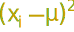
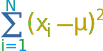
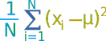

Standard Deviation Formulas
Deviation just means how far from the normal
Standard Deviation
The Standard Deviation is a measure of how spread out numbers are.
You might like to read this simpler page on Standard Deviation first.
But here we explain the formulas.
The symbol for Standard Deviation is σ (the Greek letter sigma).
This is the formula for Standard Deviation:
![square root of [ (1/N) times Sigma i=1 to N of (xi - mu)^2 ]](images/standard-deviation-formula.svg)
Say what? Please explain!
OK. Let us explain it step by step.
Say we have a bunch of numbers like 9, 2, 5, 4, 12, 7, 8, 11.
To calculate the standard deviation of those numbers:
- 1. Work out the Mean (the simple average of the numbers)
- 2. Then for each number: subtract the Mean and square the result
- 3. Then work out the mean of those squared differences.
- 4. Take the square root of that and we are done!
The formula actually says all of that, and I will show you how.
The Formula Explained
First, let us have some example values to work on:

Example: Sam has 20 Rose Bushes.
The number of flowers on each bush is
9, 2, 5, 4, 12, 7, 8, 11, 9, 3, 7, 4, 12, 5, 4, 10, 9, 6, 9, 4
Work out the Standard Deviation.
Step 1. Work out the mean
In the formula above μ (the greek letter "mu") is the mean of all our values ...
Example: 9, 2, 5, 4, 12, 7, 8, 11, 9, 3, 7, 4, 12, 5, 4, 10, 9, 6, 9, 4
The mean is:
9+2+5+4+12+7+8+11+9+3+7+4+12+5+4+10+9+6+9+4 20
= 140 20 = 7
And so μ = 7
Step 2. Then for each number: subtract the Mean and square the result
This is the part of the formula that says:

So what is xi ? They are the individual x values 9, 2, 5, 4, 12, 7, etc...
In other words x1 = 9, x2 = 2, x3 = 5, etc.
So it says "for each value, subtract the mean and square the result", like this
Example (continued):
(9 - 7)2 = (2)2 = 4
(2 - 7)2 = (-5)2 = 25
(5 - 7)2 = (-2)2 = 4
(4 - 7)2 = (-3)2 = 9
(12 - 7)2 = (5)2 = 25
(7 - 7)2 = (0)2 = 0
(8 - 7)2 = (1)2 = 1
... etc ...
And we get these results:
4, 25, 4, 9, 25, 0, 1, 16, 4, 16, 0, 9, 25, 4, 9, 9, 4, 1, 4, 9
Step 3. Then work out the mean of those squared differences.
To work out the mean, add up all the values then divide by how many.
First add up all the values from the previous step.
But how do we say "add them all up" in mathematics? We use "Sigma": Σ
The handy Sigma Notation says to sum up as many terms as we want:

Sigma Notation
We want to add up all the values from 1 to N, where N=20 in our case because there are 20 values:
Example (continued):

Which means: Sum all values from (x1-7)2 to (xN-7)2
We already calculated (x1-7)2=4 etc. in the previous step, so just sum them up:
= 4+25+4+9+25+0+1+16+4+16+0+9+25+4+9+9+4+1+4+9 = 178
But that isn't the mean yet, we need to divide by how many, which is done by multiplying by 1/N (the same as dividing by N):
Example (continued):

Mean of squared differences = (1/20) × 178 = 8.9
(Note: this value is called the "Variance")
Step 4. Take the square root of that:
Example (concluded):
σ = √(8.9) = 2.983...
DONE!
Sample Standard Deviation
But wait, there is more ...
... sometimes our data is only a sample of the whole population.
Example: Sam has 20 rose bushes, but only counted the flowers on 6 of them!
The "population" is all 20 rose bushes,
and the "sample" is the 6 bushes that Sam counted the flowers of.
Let us say Sam's flower counts are:
9, 2, 5, 4, 12, 7
We can still estimate the Standard Deviation.
But when we use the sample as an estimate of the whole population, the Standard Deviation formula changes to this:
The formula for Sample Standard Deviation:
![square root of [ (1/(N-1)) times Sigma i=1 to N of (xi - xbar)^2 ]](images/standard-deviation-sample.svg)
The important change is "N-1" instead of "N" (which is called "Bessel's correction").
The symbols also change to reflect that we are working on a sample instead of the whole population:
- The mean is now x (called "x-bar") for sample mean, instead of μ for the population mean,
- And the answer is s (for sample standard deviation) instead of σ.
But they do not affect the calculations. Only N-1 instead of N changes the calculations.
OK, let us now use the Sample Standard Deviation:
Step 1. Work out the mean
Example 2: Using sampled values 9, 2, 5, 4, 12, 7
The mean is (9+2+5+4+12+7) / 6 = 39/6 = 6.5
So:
x = 6.5
Step 2. Then for each number: subtract the Mean and square the result
Example 2 (continued):
(9 - 6.5)2 = (2.5)2 = 6.25
(2 - 6.5)2 = (-4.5)2 = 20.25
(5 - 6.5)2 = (-1.5)2 = 2.25
(4 - 6.5)2 = (-2.5)2 = 6.25
(12 - 6.5)2 = (5.5)2 = 30.25
(7 - 6.5)2 = (0.5)2 = 0.25
Step 3. Then work out the mean of those squared differences.
To work out the mean, add up all the values then divide by how many.
But hang on ... we are calculating the Sample Standard Deviation, so instead of dividing by how many (N), we will divide by N-1
Example 2 (continued):
Sum = 6.25 + 20.25 + 2.25 + 6.25 + 30.25 + 0.25 = 65.5
Divide by N-1: (1/5) × 65.5 = 13.1
(This value is called the "Sample Variance")
Step 4. Take the square root of that:
Example 2 (concluded):
s = √(13.1) = 3.619...
DONE!
Comparing
Using the whole population we got: Mean = 7, Standard Deviation = 2.983...
Using the sample we got: Sample Mean = 6.5, Sample Standard Deviation = 3.619...
Our Sample Mean was wrong by 7%, and our Sample Standard Deviation was wrong by 21%.
Why Take a Sample?
Mostly because it is easier and cheaper.
Imagine you want to know what the whole country thinks ... you can't ask millions of people, so instead you ask maybe 1,000 people.
There is a nice quote (possibly by Samuel Johnson):
"You don't have to eat the whole animal to know that the meat is tough."
This is the essential idea of sampling. To find out information about the population (such as mean and standard deviation), we do not need to look at all members of the population; we only need a sample.
But when we take a sample, we lose some accuracy.
Have a play with this at Normal Distribution Simulator.
Summary
|
The Population Standard Deviation: |
|
|
| The Sample Standard Deviation: | |